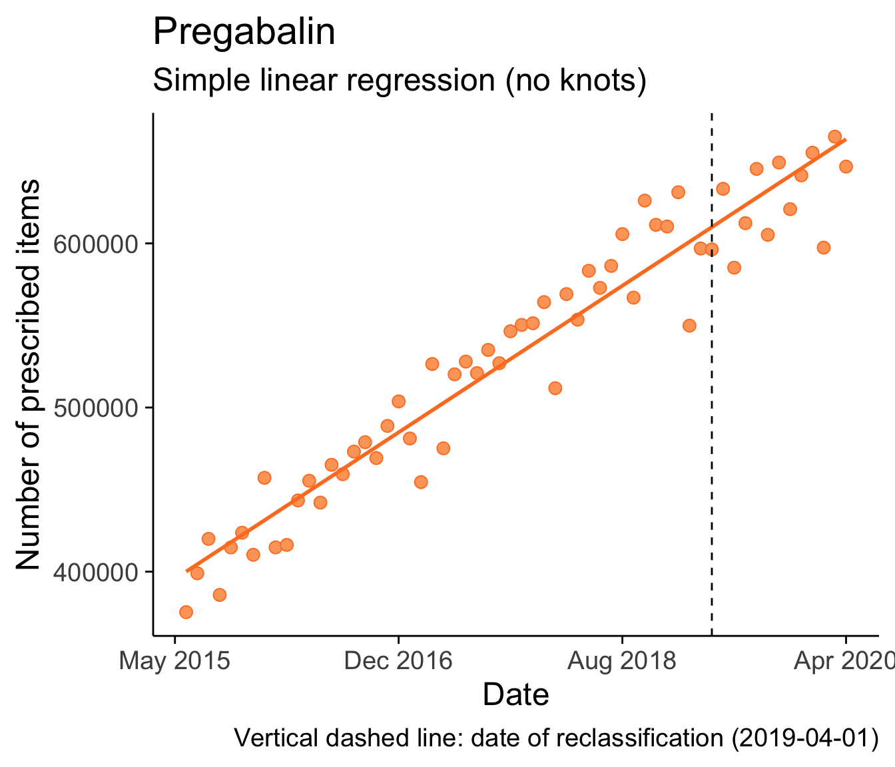
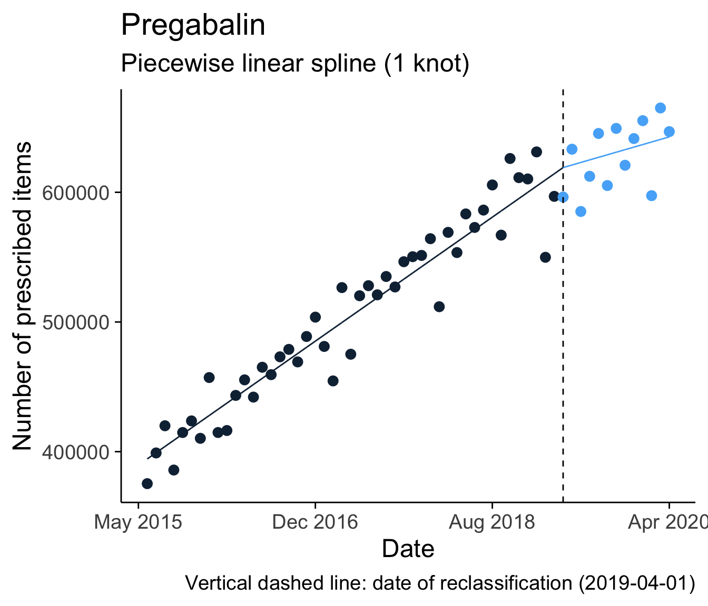

Reclassification of gabapentinoids as schedule 3 controlled substances in the UK: an interrupted time series analysis
Peter Kamerman
3 July 2020Gabapentinoids (pregabalin and gabapentin) are used for the management of neuropathic pain, some types of epileptic seizures, and anxiety.
Because of the rising number of drug-related fatalities linked to the use of gabapentinoids1, and evidence of their misuse, the drugs were reclassified in the UK in April 2019 as Class C substances, and scheduled as Schedule 3 items2. This reclassification meant that more controls were placed on the prescription of gabapentinoids.
By knowing exactly when the change in prescribing requirements began (1 April 2019), it is possible to use interrupted time series analysis to look for a change in prescribing from the time of the change in regulation. This analysis requires data on drug prescriptions over time, data that are freely available for the National Health System (NHS) England through the OpenPrescribing platform.
In this blog post I work through my first attempt at conducting an interrupted time series analysis using piecewise regression (also called segmented regression). I use two methods of piecewise regression:
Manually re-specifying the data to incorporate a breakpoint (knot).
Using linear splines to specify the knot.
Get some data
The first thing to do was to get some data. Using the OpenPrescribing API, I download data on the total items prescribed of gabapentin and pregabalin for the period 2020-05-01 to 2020-04-01 (please see this GitHub Gist for the R script I used).
Look at the data
## date time_months prescriptions_gabapentin prescriptions_pregabalin
## 1 2015-05-01 1 450908 375350
## 2 2015-06-01 2 479752 399022
## 3 2015-07-01 3 502738 419985
## 4 2015-08-01 4 460096 385838
## 5 2015-09-01 5 497057 414772
## 6 2015-10-01 6 505418 423735
## prescriptions_total
## 1 826258
## 2 878774
## 3 922723
## 4 845934
## 5 911829
## 6 929153## 'data.frame': 60 obs. of 5 variables:
## $ date : chr "2015-05-01" "2015-06-01" "2015-07-01" "2015-08-01" ...
## $ time_months : int 1 2 3 4 5 6 7 8 9 10 ...
## $ prescriptions_gabapentin: int 450908 479752 502738 460096 497057 505418 488061 543067 489551 490390 ...
## $ prescriptions_pregabalin: int 375350 399022 419985 385838 414772 423735 410291 457160 414782 416315 ...
## $ prescriptions_total : int 826258 878774 922723 845934 911829 929153 898352 1000227 904333 906705 ...The data had five columns: a date column (date), a time column expressing the time in months since the first record (time_months), and then three columns expressing the number of prescribed items per month of gabapentin (prescriptions_gabapentin), pregabalin (prescriptions_pregabalin), and the total number of gabapentinoids (prescriptions_total).
# Load package
library(dplyr)
library(tidyr)
library(stringr)
library(ggplot2)
# Process data into long format
data_long <- data %>%
pivot_longer(cols = starts_with('prescription'),
names_to = 'names',
values_to = 'values') %>%
mutate(names = str_remove(names, 'prescriptions_'))
# Plot data (make it pretty)
ggplot(data = data_long) +
aes(x = time_months,
y = values,
colour = names,
fill = names) +
geom_point(shape = 21,
size = 3) +
geom_vline(xintercept = 48,
linetype = 2) +
labs(caption = 'Vertical dashed line: date of reclassification (2019-04-01)',
y = 'Number of prescribed items',
x = 'Date') +
scale_x_continuous(labels = c('May 2015', 'Dec 2016', 'Aug 2018', 'Apr 2020')) +
scale_fill_manual(values = c('#67A0C9', '#FDA568', '#70BB70')) +
scale_colour_manual(values = c('#2678B2', '#FD7F28', '#339F34')) +
theme_minimal(base_size = 18) +
theme(legend.title = element_blank(),
legend.position = 'top',
panel.grid = element_blank(),
axis.line = element_line(size = 0.5),
axis.ticks = element_line(size = 0.5))Looking at the plot, the number of prescribed items for the individual drugs, and therefore the overall total of gabapentinoids too, have been increasing steeply over the past 5 years. There is, however, a hint (especially for pregabalin) of prescriptions leveling off a bit since the April 2019 change in prescribing regulations.
Using piecewise regression, I wanted to determine whether there was indeed a change in prescribed items from April 2019 . I did this assessment by fitting the data using simple linear regression and piecewise regression (using the two methods mentioned above), and then compared the the models. I did this modelling for each drug and the total.
Simple linear regression
# load packages
library(purrr)
# Generate a palette for some pretty colours
colours_fill <- data.frame(fill = c('#67A0C9', '#FDA568', '#70BB70'),
colour = c('#2678B2', '#FD7F28', '#339F34'))
# Purrr over the data (see: https://www.painblogr.org/2020-06-19-purring-through-exploratory-analyses)
data_long <- data_long %>%
# Nest the data by drug 'name' (pregabalin, gabapentin, and total)
group_by(names) %>%
nest() %>%
# Add the colour and fill columns
bind_cols(colours_fill) %>%
# Make the names sentence case.
mutate(names = str_to_sentence(names))
data_long <- data_long %>%
# Add model
mutate(mod_1 = map(.x = data,
~ lm(values ~ time_months, data = .x))) %>%
# Plot model
mutate(plot_1 = pmap(.l = list(data, names, fill, colour),
~ ggplot(data = ..1) +
aes(x = time_months,
y = values) +
geom_point(shape = 21,
size = 3,
fill = ..3,
colour = ..4) +
geom_smooth(method = 'lm',
se = FALSE,
colour = ..4) +
geom_vline(xintercept = 48,
linetype = 2) +
labs(title = str_glue('{..2}'),
subtitle = 'Simple linear regression (no knots)',
caption = 'Vertical dashed line: date of reclassification (2019-04-01)',
y = 'Number of prescribed items',
x = 'Date') +
scale_x_continuous(labels = c('May 2015', 'Dec 2016', 'Aug 2018', 'Apr 2020')) +
theme_minimal(base_size = 18) +
theme(legend.title = element_blank(),
legend.position = 'none',
panel.grid = element_blank(),
axis.line = element_line(size = 0.5),
axis.ticks = element_line(size = 0.5))))
# Print plots and lm outputs
## GABAPENTIN
### Plot
data_long$plot_1[[1]]##
## Call:
## lm(formula = values ~ time_months, data = .x)
##
## Residuals:
## Min 1Q Median 3Q Max
## -70794 -21651 3032 24697 51188
##
## Coefficients:
## Estimate Std. Error t value Pr(>|t|)
## (Intercept) 503528.8 7728.0 65.16 < 0.0000000000000002 ***
## time_months 2371.7 220.3 10.76 0.00000000000000189 ***
## ---
## Signif. codes: 0 '***' 0.001 '**' 0.01 '*' 0.05 '.' 0.1 ' ' 1
##
## Residual standard error: 29560 on 58 degrees of freedom
## Multiple R-squared: 0.6664, Adjusted R-squared: 0.6606
## F-statistic: 115.9 on 1 and 58 DF, p-value: 0.00000000000000189
##
## Call:
## lm(formula = values ~ time_months, data = .x)
##
## Residuals:
## Min 1Q Median 3Q Max
## -57154 -12165 4972 16396 42945
##
## Coefficients:
## Estimate Std. Error t value Pr(>|t|)
## (Intercept) 395574.9 5587.7 70.79 <0.0000000000000002 ***
## time_months 4465.3 159.3 28.03 <0.0000000000000002 ***
## ---
## Signif. codes: 0 '***' 0.001 '**' 0.01 '*' 0.05 '.' 0.1 ' ' 1
##
## Residual standard error: 21370 on 58 degrees of freedom
## Multiple R-squared: 0.9312, Adjusted R-squared: 0.9301
## F-statistic: 785.6 on 1 and 58 DF, p-value: < 0.00000000000000022##
## Call:
## lm(formula = values ~ time_months, data = .x)
##
## Residuals:
## Min 1Q Median 3Q Max
## -127948 -34376 5254 42910 83841
##
## Coefficients:
## Estimate Std. Error t value Pr(>|t|)
## (Intercept) 899103.7 12992.2 69.20 <0.0000000000000002 ***
## time_months 6837.0 370.4 18.46 <0.0000000000000002 ***
## ---
## Signif. codes: 0 '***' 0.001 '**' 0.01 '*' 0.05 '.' 0.1 ' ' 1
##
## Residual standard error: 49690 on 58 degrees of freedom
## Multiple R-squared: 0.8545, Adjusted R-squared: 0.852
## F-statistic: 340.7 on 1 and 58 DF, p-value: < 0.00000000000000022Piecewise regression
Manually re-specify the data to create two segments around a knot
To create a knot I needed to include a second term in the linear regression model, one term for each segment.
Original model:
\[y = \beta{_0} + \beta{_1}X\]
New model:
\[y = \beta{_0} + \beta{_1}x + \beta{_2}(x - x^{(k)})xk\]
Where:
\(xk\) is a dummy knot, which takes a value of 1 when \(x \geq x^{(k)}\) and 0 when \(x < x^{(k)}\)
\((x - x^{(k)})\) is the value of \(x\) minus the knot value (\(x^{(k)}\))
Thus, for \(x\) values that fall below the knot value (\(x^{(k)}\)), the second term will be 0, and for \(x\) values greater than the knot value the second term will be \((x - x^{(k)})\).
For my data, the knot point was 48 months, the time_months value that coincided with the implementation of the new regulations (2019-04-01). Therefore I re-specified the data into two terms: time_months (for time values \(<\) 48 months) and time_months2 (for time values \(\geq\) 48 months)
The code block below shows how I added the second term for each of the three datatsets (Gabapentin, Pregabalin, and Total). First I created a dummy knot (\(kx\); dummy_knot) at 48 months, then I subtracted the knot value (\(x^{(k)} = 48\)) from time_months (\(x\)) to produce x_minus_knot, and finally I multiplied dummy_knot by x_minus_knot to yield the second term of the model, namely, time_months2.
data_long <- data_long %>%
mutate(data_2 = map(.x = data,
~ .x %>%
# Create a dummy knot
mutate(dummy_knot = ifelse(time_months < 48,
yes = 0,
no = 1)) %>%
# Subtract knot value from x
mutate(x_minus_knot = time_months - 48) %>%
# Calculate time_months2
mutate(time_months2 = dummy_knot * x_minus_knot)))
# Top-and-tail GABAPENTIN to check what the data looks like
head(data_long$data_2[[1]])## # A tibble: 6 x 6
## date time_months values dummy_knot x_minus_knot time_months2
## <chr> <int> <int> <dbl> <dbl> <dbl>
## 1 2015-05-01 1 450908 0 -47 0
## 2 2015-06-01 2 479752 0 -46 0
## 3 2015-07-01 3 502738 0 -45 0
## 4 2015-08-01 4 460096 0 -44 0
## 5 2015-09-01 5 497057 0 -43 0
## 6 2015-10-01 6 505418 0 -42 0## # A tibble: 6 x 6
## date time_months values dummy_knot x_minus_knot time_months2
## <chr> <int> <int> <dbl> <dbl> <dbl>
## 1 2019-11-01 55 602927 1 7 7
## 2 2019-12-01 56 618615 1 8 8
## 3 2020-01-01 57 629109 1 9 9
## 4 2020-02-01 58 570291 1 10 10
## 5 2020-03-01 59 642909 1 11 11
## 6 2020-04-01 60 616384 1 12 12Then I ran the model using the updated data.
data_long <- data_long %>%
mutate(mod_2 = map(.x = data_2,
~ lm(values ~ time_months + time_months2, data = .x)))I then generated predicted values for the model and plotted the data.
data_long <- data_long %>%
# Generate predicted data
mutate(data_3 = map2(.x = data_2,
.y = mod_2,
~ .x %>%
mutate(predicted = predict(.y)))) %>%
# Generate plots
mutate(plot_2 = map2(.x = data_3,
.y = names,
~ ggplot(data = .x) +
aes(x = time_months,
y = values,
colour = dummy_knot,
fill = dummy_knot) +
geom_point(shape = 21,
size = 3) +
geom_line(aes(y = predicted)) +
geom_vline(xintercept = 48,
linetype = 2) +
labs(title = .y,
subtitle = 'Segmented regression (1 knot)',
caption = 'Vertical dashed line: date of reclassification (2019-04-01)',
y = 'Number of prescribed items',
x = 'Date') +
scale_x_continuous(labels = c('May 2015', 'Dec 2016', 'Aug 2018', 'Apr 2020')) +
theme_minimal(base_size = 18) +
theme(legend.title = element_blank(),
legend.position = 'none',
panel.grid = element_blank(),
axis.line = element_line(size = 0.5),
axis.ticks = element_line(size = 0.5))))
# Print plots and lm outputs, and slopes
## GABAPENTIN
### Plot
data_long$plot_2[[1]]##
## Call:
## lm(formula = values ~ time_months + time_months2, data = .x)
##
## Residuals:
## Min 1Q Median 3Q Max
## -76545 -19315 3516 19892 48666
##
## Coefficients:
## Estimate Std. Error t value Pr(>|t|)
## (Intercept) 491934.6 7687.0 63.996 < 0.0000000000000002 ***
## time_months 2985.4 260.5 11.462 < 0.0000000000000002 ***
## time_months2 -5481.2 1491.8 -3.674 0.000528 ***
## ---
## Signif. codes: 0 '***' 0.001 '**' 0.01 '*' 0.05 '.' 0.1 ' ' 1
##
## Residual standard error: 26810 on 57 degrees of freedom
## Multiple R-squared: 0.7303, Adjusted R-squared: 0.7208
## F-statistic: 77.17 on 2 and 57 DF, p-value: < 0.00000000000000022## [1] 2985.421#### Segment 2 (the sum of the two regression coefficients)
coef(data_long$mod_2[[1]])[[2]] + coef(data_long$mod_2[[1]])[[3]]## [1] -2495.8##
## Call:
## lm(formula = values ~ time_months + time_months2, data = .x)
##
## Residuals:
## Min 1Q Median 3Q Max
## -59624 -12687 6007 13611 35680
##
## Coefficients:
## Estimate Std. Error t value Pr(>|t|)
## (Intercept) 389636.5 5876.8 66.300 <0.0000000000000002 ***
## time_months 4779.7 199.1 24.003 <0.0000000000000002 ***
## time_months2 -2807.4 1140.5 -2.462 0.0169 *
## ---
## Signif. codes: 0 '***' 0.001 '**' 0.01 '*' 0.05 '.' 0.1 ' ' 1
##
## Residual standard error: 20500 on 57 degrees of freedom
## Multiple R-squared: 0.9379, Adjusted R-squared: 0.9357
## F-statistic: 430.1 on 2 and 57 DF, p-value: < 0.00000000000000022## [1] 4779.71#### Segment 2 (the sum of the two regression coefficients)
coef(data_long$mod_2[[2]])[[2]] + coef(data_long$mod_2[[2]])[[3]]## [1] 1972.273
##
## Call:
## lm(formula = values ~ time_months + time_months2, data = .x)
##
## Residuals:
## Min 1Q Median 3Q Max
## -136169 -37501 12546 32975 75616
##
## Coefficients:
## Estimate Std. Error t value Pr(>|t|)
## (Intercept) 881571.1 13212.1 66.724 < 0.0000000000000002 ***
## time_months 7765.1 447.7 17.345 < 0.0000000000000002 ***
## time_months2 -8288.7 2564.0 -3.233 0.00204 **
## ---
## Signif. codes: 0 '***' 0.001 '**' 0.01 '*' 0.05 '.' 0.1 ' ' 1
##
## Residual standard error: 46080 on 57 degrees of freedom
## Multiple R-squared: 0.8771, Adjusted R-squared: 0.8727
## F-statistic: 203.3 on 2 and 57 DF, p-value: < 0.00000000000000022## [1] 7765.131#### Segment 2 (the sum of the two regression coefficients)
coef(data_long$mod_2[[3]])[[2]] + coef(data_long$mod_2[[3]])[[3]]## [1] -523.5277Use linear splines to specfiy two segments around a knot
You can do the same thing as manually re-specifying the data into two segments by using the lspline function from the lspline package.
The lspline function is designed to, compute the basis of piecewise-linear spline.
The arguments for the function are:
lspline(x, knots = NULL, marginal = FALSE)
Where:
xis a numeric vector (x values)knotsis a numeric vector of knot positionsmarginalis a logical that determines whether coefficients can be interpreted as slopes of consecutive spline segments (FALSE), or slope change at consecutive knots (TRUE).
# Load package
library(lspline)
data_long <- data_long %>%
# Generate the model using lspline
mutate(mod_3 = map(.x = data,
~ lm(values ~ lspline(x = time_months,
knots = 48,
marginal = FALSE), data = .x))) %>%
# Get predicted values
mutate(data_4 = map2(.x = data_3,
.y = mod_3,
~ .x %>%
mutate(predicted_spl = predict(.y)))) %>%
# Generate plots
mutate(plot_3 = map2(.x = data_4,
.y = names,
~ ggplot(data = .x) +
aes(x = time_months,
y = values,
colour = dummy_knot,
fill = dummy_knot) +
geom_point(shape = 21,
size = 3) +
geom_line(aes(y = predicted_spl)) +
geom_vline(xintercept = 48,
linetype = 2) +
labs(title = .y,
subtitle = 'Piecewise linear spline (1 knot)',
caption = 'Vertical dashed line: date of reclassification (2019-04-01)',
y = 'Number of prescribed items',
x = 'Date') +
scale_x_continuous(labels = c('May 2015', 'Dec 2016', 'Aug 2018', 'Apr 2020')) +
theme_minimal(base_size = 18) +
theme(legend.title = element_blank(),
legend.position = 'none',
panel.grid = element_blank(),
axis.line = element_line(size = 0.5),
axis.ticks = element_line(size = 0.5))))
# Print plots and lm outputs, and slopes
## GABAPENTIN
### Plot
data_long$plot_3[[1]]##
## Call:
## lm(formula = values ~ lspline(x = time_months, knots = 48, marginal = FALSE),
## data = .x)
##
## Residuals:
## Min 1Q Median 3Q Max
## -76545 -19315 3516 19892 48666
##
## Coefficients:
## Estimate Std. Error
## (Intercept) 491934.6 7687.0
## lspline(x = time_months, knots = 48, marginal = FALSE)1 2985.4 260.5
## lspline(x = time_months, knots = 48, marginal = FALSE)2 -2495.8 1339.7
## t value
## (Intercept) 63.996
## lspline(x = time_months, knots = 48, marginal = FALSE)1 11.462
## lspline(x = time_months, knots = 48, marginal = FALSE)2 -1.863
## Pr(>|t|)
## (Intercept) <0.0000000000000002 ***
## lspline(x = time_months, knots = 48, marginal = FALSE)1 <0.0000000000000002 ***
## lspline(x = time_months, knots = 48, marginal = FALSE)2 0.0676 .
## ---
## Signif. codes: 0 '***' 0.001 '**' 0.01 '*' 0.05 '.' 0.1 ' ' 1
##
## Residual standard error: 26810 on 57 degrees of freedom
## Multiple R-squared: 0.7303, Adjusted R-squared: 0.7208
## F-statistic: 77.17 on 2 and 57 DF, p-value: < 0.00000000000000022## [1] 2985.421#### Segment 2
#### (marginal = FALSE, therefore coefficients can be interpreted as slopes of consecutive spline segments)
coef(data_long$mod_3[[1]])[[3]]## [1] -2495.8
##
## Call:
## lm(formula = values ~ lspline(x = time_months, knots = 48, marginal = FALSE),
## data = .x)
##
## Residuals:
## Min 1Q Median 3Q Max
## -59624 -12687 6007 13611 35680
##
## Coefficients:
## Estimate Std. Error
## (Intercept) 389636.5 5876.8
## lspline(x = time_months, knots = 48, marginal = FALSE)1 4779.7 199.1
## lspline(x = time_months, knots = 48, marginal = FALSE)2 1972.3 1024.2
## t value
## (Intercept) 66.300
## lspline(x = time_months, knots = 48, marginal = FALSE)1 24.003
## lspline(x = time_months, knots = 48, marginal = FALSE)2 1.926
## Pr(>|t|)
## (Intercept) <0.0000000000000002 ***
## lspline(x = time_months, knots = 48, marginal = FALSE)1 <0.0000000000000002 ***
## lspline(x = time_months, knots = 48, marginal = FALSE)2 0.0591 .
## ---
## Signif. codes: 0 '***' 0.001 '**' 0.01 '*' 0.05 '.' 0.1 ' ' 1
##
## Residual standard error: 20500 on 57 degrees of freedom
## Multiple R-squared: 0.9379, Adjusted R-squared: 0.9357
## F-statistic: 430.1 on 2 and 57 DF, p-value: < 0.00000000000000022## [1] 4779.71#### Segment 2
#### (marginal = FALSE, therefore coefficients can be interpreted as slopes of consecutive spline segments)
coef(data_long$mod_3[[2]])[[3]]## [1] 1972.273##
## Call:
## lm(formula = values ~ lspline(x = time_months, knots = 48, marginal = FALSE),
## data = .x)
##
## Residuals:
## Min 1Q Median 3Q Max
## -136169 -37501 12546 32975 75616
##
## Coefficients:
## Estimate Std. Error
## (Intercept) 881571.1 13212.1
## lspline(x = time_months, knots = 48, marginal = FALSE)1 7765.1 447.7
## lspline(x = time_months, knots = 48, marginal = FALSE)2 -523.5 2302.6
## t value
## (Intercept) 66.724
## lspline(x = time_months, knots = 48, marginal = FALSE)1 17.345
## lspline(x = time_months, knots = 48, marginal = FALSE)2 -0.227
## Pr(>|t|)
## (Intercept) <0.0000000000000002 ***
## lspline(x = time_months, knots = 48, marginal = FALSE)1 <0.0000000000000002 ***
## lspline(x = time_months, knots = 48, marginal = FALSE)2 0.821
## ---
## Signif. codes: 0 '***' 0.001 '**' 0.01 '*' 0.05 '.' 0.1 ' ' 1
##
## Residual standard error: 46080 on 57 degrees of freedom
## Multiple R-squared: 0.8771, Adjusted R-squared: 0.8727
## F-statistic: 203.3 on 2 and 57 DF, p-value: < 0.00000000000000022## [1] 7765.131#### Segment 2
#### (marginal = FALSE, therefore coefficients can be interpreted as slopes of consecutive spline segments)
coef(data_long$mod_3[[3]])[[3]]## [1] -523.5277Summary
If you go back and compare the plots and slopes generated by the manually specified segments to those generated using lsplines, you find that they are identical, which is what you expect, but using lsplines saved quite a bit of coding to process the data compared to the manual method.
More important for the question I asked (did the change in prescribing regulations lead to a change in prescribed items?), was whether the fit and quality of the simple linear regression was worse than the piecewise regression models? For assessing goodness-of-fit, I used the \(adjusted R^2\), and for model selection I used \(AIC\).
For number of gabapentin items prescribed:
\(adjusted R^2_{simple}\) = 0.66 and \(adjusted R^2_{segmented}\) = 0.72
\(AIC_{simple}\) = 1410 and \(AIC_{segmented}\) = 1399
So neither model is a great fit, and its obvious why when you look at the plots; the data follow a curvilinear path that isnt fully captured by the simple linear regression or linear spline. Based on the \(AIC\), the quality of the segmented model was relatively better than that of the simple linear regression model.
For number of pregabalin items prescribed:
\(adjusted R^2_{simple}\) = 0.93 and \(adjusted R^2_{segmented}\) = 0.94
\(AIC_{simple}\) = 1371 and \(AIC_{segmented}\) = 1367
So by looking at the plots and assessing the \(adjusted R^2\)s values, you can see that both models are fairly good fits. Based on the \(AIC\) the quality of the segmented model is relatively better than that of the simple linear regression model.
For total number of items prescribed:
\(adjusted R^2_{simple}\) = 0.85 and \(adjusted R^2_{segmented}\) = 0.87
\(AIC_{simple}\) = 1472 and \(AIC_{segmented}\) = 1464
So neither model is a great fit, with the fit lying somewhere between the \(adjusted R^2\) values obtained for pregabalin and those obtained for gabapentin. If you look at the plots, the data follow a curvilinear path, reflecting the influence of the gabapentin data on the total number of prescribed items. Based on the \(AIC\), the quality of the segmented model is relatively better than that of the simple linear regression model.
Based on these results, I feel that the piecewise regression models were marginally better than the models produced by simple linear regression, and that there has been a change in prescribing of gabapentinoids since the introduction of the new regulations in April 2019. However, the changes are not marked.
For more cool R content, visit: R Weekly
Session information
## R version 4.0.2 (2020-06-22)
## Platform: x86_64-apple-darwin17.0 (64-bit)
## Running under: macOS Catalina 10.15.5
##
## Matrix products: default
## BLAS: /Library/Frameworks/R.framework/Versions/4.0/Resources/lib/libRblas.dylib
## LAPACK: /Library/Frameworks/R.framework/Versions/4.0/Resources/lib/libRlapack.dylib
##
## locale:
## [1] en_US.UTF-8/en_US.UTF-8/en_US.UTF-8/C/en_US.UTF-8/en_US.UTF-8
##
## attached base packages:
## [1] stats graphics grDevices utils datasets methods base
##
## other attached packages:
## [1] lspline_1.0-0 purrr_0.3.4 ggplot2_3.3.2 stringr_1.4.0 tidyr_1.1.0
## [6] dplyr_1.0.0
##
## loaded via a namespace (and not attached):
## [1] Rcpp_1.0.4.6 pillar_1.4.4 compiler_4.0.2 tools_4.0.2
## [5] digest_0.6.25 evaluate_0.14 lifecycle_0.2.0 tibble_3.0.1
## [9] gtable_0.3.0 nlme_3.1-148 lattice_0.20-41 mgcv_1.8-31
## [13] pkgconfig_2.0.3 rlang_0.4.6 Matrix_1.2-18 cli_2.0.2
## [17] yaml_2.2.1 xfun_0.15 withr_2.2.0 knitr_1.29
## [21] generics_0.0.2 vctrs_0.3.1 grid_4.0.2 tidyselect_1.1.0
## [25] glue_1.4.1 R6_2.4.1 fansi_0.4.1 rmarkdown_2.3
## [29] farver_2.0.3 magrittr_1.5 scales_1.1.1 ellipsis_0.3.1
## [33] htmltools_0.5.0 splines_4.0.2 assertthat_0.2.1 colorspace_1.4-1
## [37] labeling_0.3 utf8_1.1.4 stringi_1.4.6 munsell_0.5.0
## [41] crayon_1.3.4Torrance N, Veluchamy A, Zhou Y, Fletcher EH, Moir E, Hebert HL, Donnan PT, Watson J, Colvin LA, Smith BH. Trends in gabapentinoid prescribing, co-prescribing of opioids and benzodiazepines, and associated deaths in Scotland. Br J Anaesth [in press]. doi: 10.1016/j.bja.2020.05.017.
Rescheduling of Gabapentin and Pregabalin as Schedule 3 Controlled Drugs. NHS England. Accessed: 2020-06-29.